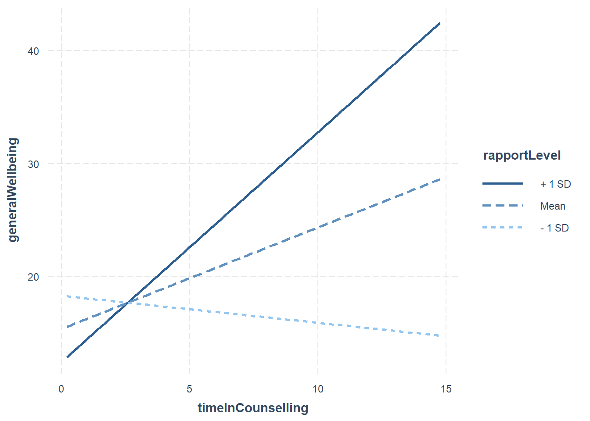
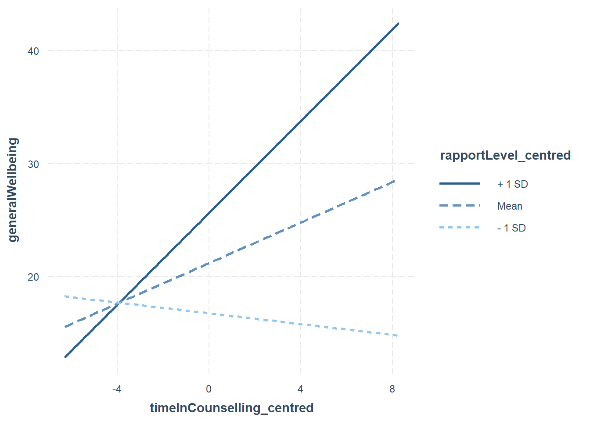
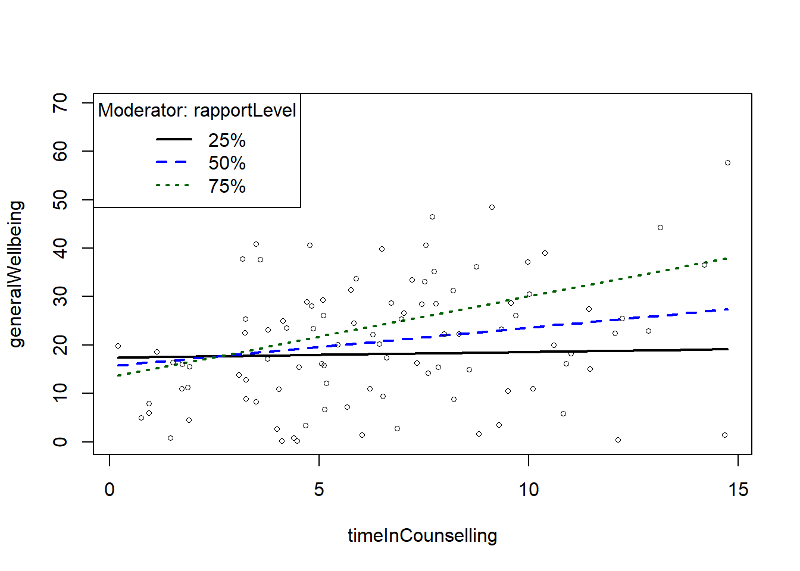
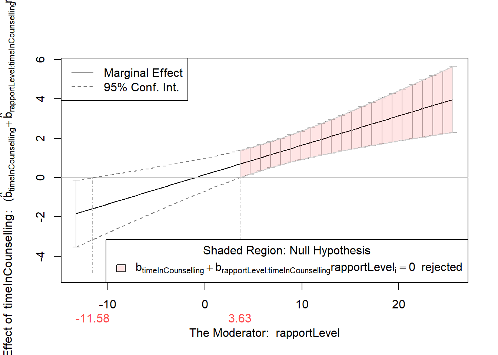
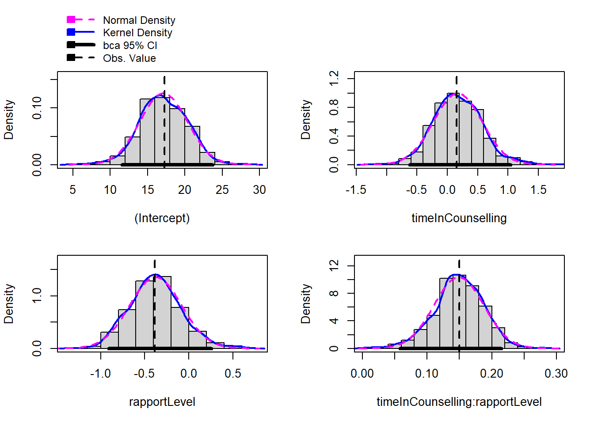

9 Moderation
At the end of this chapter, you will be able to:
- Describe moderation
- Check the assumptions of moderation
- Interpret the results of moderation analysis
- Mean centre data for moderation analysis
- Bootstrap moderation analysis
9.1 What is moderation?
Theoretically, we can think of moderation as a relationship between a predictor (X) and an outcome (Y) that is affected by a third variable (M). This means that the relationship between X and Y exists, but the strength of this relationship is affected by the level of M. We could also phrase this as the relationship between X and Y being different, depending on the level of M.
A moderated relationship can be visualised as follows:

In the above model, we theorise that Time in counselling predicts General Wellbeing but the strength of the relationship is affected by the level of Rapport with psychologist. As with all of our hypotheses, the moderated relationship is theorised based on previous research evidence and/or strong theoretical reasoning.
9.2 What packages do we need?
We can do a lot of the moderation analysis with just the lm() function in R. However, there are some packages that can make the process easier and help us understand the moderation better. These include:
- gvlma (for checking assumptions)
- interactions (for generating interaction plot)
- Rockchalk (for testing simple slopes)
- car (includes a Boot() function to bootstrap regression models )
9.3 Moderation as an interaction
When we say that a variable moderates the relationship between two other variables, we are saying that the relationship between the two variables is not the same at different levels of the moderator. This is similar to an interaction in standard regression analysis. In fact, we can tell if there is a moderation effect by looking at the interaction term in a regression model.
lm(Y ~ X + M + X*M)
In the above formula, the interaction term is X*M. This term is the product of the two variables (X and M). If the interaction term is significant, this suggests that there is a moderation effect.
If the interaction term is significant, this suggests that there is a moderation effect.
However, a moderator can effect the direction and/or strength of a relationship between X and Y. The interaction effect might only be significant when the moderator is at a certain level. The below plot shows a moderated relationship:
In the plot above:
- The blue line is the “standard” regression line
- The black line is when the moderator is “low” (-1sd)
- The dotted line is when the moderator is “high” (+1sd)
To understand the moderation effect fully, we need some additional analysis.
9.4 Moderation: step-by-step
9.4.1 Run your model
As with our previous models, we start by running a regression model. In this case, we are interested in the interaction between our predictor and moderator. The model is named fitMod and is run using the lm() function. The name is not important, but it is good practice to name your models in a way that makes sense to you.
fitMod <- lm(generalWellbeing ~ timeInCounselling *rapportLevel , data = Moddata) #Model interacts IV & moderator
Grand Mean Centering
In many moderation models, people use grand mean centering. This is a way to make the results of the model easier to interpret. Especially if you have a continuous moderator, it can be helpful to center the data around the grand mean. This means that the mean of the data is subtracted from each value. This makes the mean of the data 0.
This is becuase regression coefficients (b values) are based on predicting Y when X = 0, but not all measures actually have a zero value. To make results easier to interpret, we can centre our data around the grand mean of the data (making the mean 0). The mean of the full sample is subtracted from the value. This is similar to z-score (i.e. a standardised score)
To do this in R, we can use the scale() function:
timeInCounselling_centred <- scale(timeInCounselling, center=TRUE, scale=FALSE) #Centering X;
rapportLevel_centred <- scale(rapportLevel, center=TRUE, scale=FALSE) #Centering M;We then use the centred data in our analysis.
We can see that the difference between the original data is the mean of the data.
timeInCounselling_centred <- scale(timeInCounselling, center=TRUE, scale=FALSE) #Centering X;
timeInCounselling [1] 3.7580974 5.0792900 12.2348333 6.2820336 6.5171509 12.8602599
[7] 7.8436648 0.9397551 3.2525886 4.2173521 10.8963272 7.4392553
[13] 7.6030858 6.4427309 3.7766355 13.1476525 7.9914019 1.8664686
[19] 8.8054236 4.1088344 1.7287052 5.1281003 1.8959822 3.0844351
[25] 3.4998429 0.7467732 9.3511482 6.6134925 1.4474523 11.0152597
[31] 7.7058569 4.8197141 9.5805026 9.5125340 9.2863243 8.7545610
[37] 8.2156706 5.7523532 4.7761493 4.4781160 3.2211721 5.1683309
[43] 0.9384146 14.6758239 10.8318480 1.5075657 4.3884607 4.1333786
[49] 9.1198605 5.6665237 7.0132741 5.8858130 5.8285182 11.4744091
[55] 5.0969161 12.0658824 0.1950112 8.3384550 6.4954170 6.8637663
[61] 7.5185579 3.9907062 4.6671705 1.9256985 1.7128351 7.2141146
[67] 7.7928391 6.2120169 9.6890699 14.2003387 4.0358753 3.2366755
[73] 10.0229541 3.1631969 3.2479655 10.1022855 4.8609080 1.1171292
[79] 6.7252139 5.4444346 6.0230567 7.5411216 4.5173599 8.5775062
[85] 5.1180538 7.3271279 10.3873561 7.7407260 4.6962737 10.5952305
[91] 9.9740154 8.1935878 6.9549269 3.4883757 11.4426098 3.5989617
[97] 14.7493320 12.1304425 5.0571986 1.8943164 head(timeInCounselling_centred) [,1]
[1,] -2.72442479
[2,] -1.40323216
[3,] 5.75231105
[4,] -0.20048864
[5,] 0.03462873
[6,] 6.37773774 mean(timeInCounselling)[1] 6.482522 timeInCounselling[1]-timeInCounselling_centred[1][1] 6.482522#Centering Data
Moddata$timeInCounselling_centred <- c(scale(timeInCounselling, center=TRUE, scale=FALSE))
#Centering IV;
Moddata$rapportLevel_centred <- c(scale(rapportLevel, center=TRUE, scale=FALSE)) #Centering moderator;
#Moderation "By Hand" with centred data
library(gvlma)
fitMod <- lm(generalWellbeing ~ timeInCounselling_centred *rapportLevel_centred , data = Moddata) #Model interacts IV & moderator
library(interactions)
ip <- interact_plot(fitMod, pred = timeInCounselling_centred, modx = rapportLevel_centred)
ip
9.4.1.1 Do I need to mean centre my data?
It’s really about ease of interpretation. It is worth noting:
- It does not change the results of your interaction (coefficient, standard error or significance tests).
- It will change the results of the direct effects (the individual predictors in your model).
- It is a step that tries to ensure that the coefficients of the predictor and moderator are meaningful to interpret, in relation to each other.
- In some cases, it might not be necessary to mean centre at all. However, there is no harm in doing so, and it could potentially be helpful.
Hayes (2013) discusses mean centering, pp. 282-290.
9.4.2 Step 2: Check assumptions
We can use the gvlma function to check regression assumptions for moderation analysis.
library(gvlma)
gvlma(fitMod)
Call:
lm(formula = generalWellbeing ~ timeInCounselling_centred * rapportLevel_centred,
data = Moddata)
Coefficients:
(Intercept)
21.1851
timeInCounselling_centred
0.8971
rapportLevel_centred
0.5842
timeInCounselling_centred:rapportLevel_centred
0.1495
ASSESSMENT OF THE LINEAR MODEL ASSUMPTIONS
USING THE GLOBAL TEST ON 4 DEGREES-OF-FREEDOM:
Level of Significance = 0.05
Call:
gvlma(x = fitMod)
Value p-value Decision
Global Stat 9.6949 0.04589 Assumptions NOT satisfied!
Skewness 7.7571 0.00535 Assumptions NOT satisfied!
Kurtosis 1.2182 0.26972 Assumptions acceptable.
Link Function 0.5287 0.46716 Assumptions acceptable.
Heteroscedasticity 0.1910 0.66207 Assumptions acceptable.The “global stat” is an attempt to check multiple assumptions of linear model: Pena, E. A., & Slate, E. H. (2006). Global validation of linear model assumptions. Journal of the American Statistical Association, 101(473), 341-354.
Since one of the underlying assumptions is violated, the overall stat is also not acceptable.
The data looks skewed, we should transform it or perhaps use bootstrapping (we will do this later).
9.4.3 Multicollinearity?
For more information on multicollinearity in moderation, see Clelland, G. H., Irwin, J. R., Disatnik, D., & Sivan, L. (2017). Multicollinearity is a red herring in the search for moderator variables: A guide to interpreting moderated multiple regression models and a critique of Iacobucci, Schneider, Popovich, and Bakamitsos (2016). Behavior research methods, 49(1), 394-402.
9.4.4 Step 3: Moderation Analysis
Now that we have run our model and checked the assumptions, we can interpret the results. So we run the summary() function on our model.
fitMod <- lm(generalWellbeing ~ timeInCounselling_centred *rapportLevel_centred , data = Moddata) #Model interacts IV & moderator
#Model interacts IV & moderator
summary(fitMod)
Call:
lm(formula = generalWellbeing ~ timeInCounselling_centred * rapportLevel_centred,
data = Moddata)
Residuals:
Min 1Q Median 3Q Max
-18.121 -8.938 -0.670 5.840 37.396
Coefficients:
Estimate Std. Error t value
(Intercept) 21.18508 1.14115 18.565
timeInCounselling_centred 0.89707 0.33927 2.644
rapportLevel_centred 0.58416 0.15117 3.864
timeInCounselling_centred:rapportLevel_centred 0.14948 0.04022 3.716
Pr(>|t|)
(Intercept) < 2e-16 ***
timeInCounselling_centred 0.009569 **
rapportLevel_centred 0.000203 ***
timeInCounselling_centred:rapportLevel_centred 0.000340 ***
---
Signif. codes: 0 '***' 0.001 '**' 0.01 '*' 0.05 '.' 0.1 ' ' 1
Residual standard error: 11.33 on 96 degrees of freedom
Multiple R-squared: 0.2737, Adjusted R-squared: 0.251
F-statistic: 12.06 on 3 and 96 DF, p-value: 9.12e-07The results above show that there is a moderated effect (the interaction term is significant). When the interaction term is significant, this suggests that there is a moderation effect (i.e. the relationship between the predictor and outcome is different at different levels of the moderator). So we do not need to interpret the main effects (timeInCounselling and rapportLevel).
9.4.4.1 Visualising the moderation effect
We use an approach called simple slopes to visualise the moderation effect. This is a way to see how the relationship between the predictor and outcome changes at different levels of the moderator.
interact_plot(fitMod, pred = timeInCounselling_centred, modx = rapportLevel_centred)

In the case of the above plot, we can see that the relationship between timeInCounselling and generalWellbeing is stronger when rapportLevel is high (+1sd) compared to when it is low (-1sd).
The rockchalk package includes useful functions for visualising simple slopes
library(rockchalk)
fitMod <- lm(generalWellbeing ~ timeInCounselling *rapportLevel , data = Moddata)
summary(fitMod)
slopes <- plotSlopes(fitMod, modx = "rapportLevel", plotx = "timeInCounselling")- 2
-
The
testSlopes()function tests the simple slopes. This is to see if the slopes are significant. - 3
-
The
plot()function is used to plot the results of the simple slopes test. This tells us at which level of the moderator the slopes are significant.


Call:
lm(formula = generalWellbeing ~ timeInCounselling * rapportLevel,
data = Moddata)
Residuals:
Min 1Q Median 3Q Max
-18.121 -8.938 -0.670 5.840 37.396
Coefficients:
Estimate Std. Error t value Pr(>|t|)
(Intercept) 17.28006 3.17944 5.435 4.15e-07 ***
timeInCounselling 0.15510 0.42033 0.369 0.71296
rapportLevel -0.38484 0.29916 -1.286 0.20140
timeInCounselling:rapportLevel 0.14948 0.04022 3.716 0.00034 ***
---
Signif. codes: 0 '***' 0.001 '**' 0.01 '*' 0.05 '.' 0.1 ' ' 1
Residual standard error: 11.33 on 96 degrees of freedom
Multiple R-squared: 0.2737, Adjusted R-squared: 0.251
F-statistic: 12.06 on 3 and 96 DF, p-value: 9.12e-07
Values of rapportLevel OUTSIDE this interval:
lo hi
-11.580166 3.634439
cause the slope of (b1 + b2*rapportLevel)timeInCounselling to be statistically significantIn the example above, we can see that the slope of the relationship between timeInCounselling and generalWellbeing is significant when the moderator is between -11.58 and 3.63. We can look at the simple slopes plot to see how the relationship changes at these levels. We can also check whether -11.58 and 3.63 are within the range of the moderator variable (rapportLevel) - if this is not the case, we only consider the values that are within the possible range of the moderator variable.
9.4.5 Step 4: Bootstrapping
We saw in the regression diagnostics that the data was skewed. We can use bootstrapping to get a more accurate estimate of the confidence intervals. The car package includes a function to bootstrap any regression
library(car)- 1
-
The
Boot()function is used to bootstrap the model. We save the results as an object calledbootstrapModel. - 2
-
We can use the
confint()function to get the confidence intervals of the original model. - 3
-
We can use the
confint()function to get the confidence intervals of the bootstrapped model. - 4
-
We can use the
summary()function to get a summary of the bootstrapped model. - 5
-
We can use the
hist()function to plot a histogram of the bootstrapped model.
Loading required package: carData1bootstrapModel <- Boot(fitMod, R=999)
2confint(fitMod)
3confint(bootstrapModel)
4summary(bootstrapModel)
5hist(bootstrapModel)
2.5 % 97.5 %
(Intercept) 10.96891826 23.5912086
timeInCounselling -0.67926290 0.9894532
rapportLevel -0.97866229 0.2089882
timeInCounselling:rapportLevel 0.06963667 0.2293205
Bootstrap bca confidence intervals
2.5 % 97.5 %
(Intercept) 11.57230420 23.7222700
timeInCounselling -0.61780918 1.0397199
rapportLevel -0.90786799 0.2558502
timeInCounselling:rapportLevel 0.05806412 0.2146814
Number of bootstrap replications R = 999
original bootBias bootSE bootMed
(Intercept) 17.28006 -0.13667103 3.165301 17.05431
timeInCounselling 0.15510 0.01637117 0.399550 0.15929
rapportLevel -0.38484 0.00716631 0.294061 -0.38218
timeInCounselling:rapportLevel 0.14948 -0.00052838 0.038516 0.14974Comparing the confidence intervals of the original model and the bootstrapped model can give us an idea of how accurate our original model is. If the confidence intervals are very different, this suggests that the original model is not very accurate. In this case, we might want to use the bootstrapped model instead.
The bootBias and bootSE columns in the summary of the bootstrapped model can also give us an idea of how much the bootstrapped model differs from the original model. If the bootBias is very different from 0, this suggests that the original model is biased. If the bootSE is very different from the original SE, this suggests that the original model is not very accurate.
In the data above, we can see that the bootBias and bootSE are very close to 0 and the original SE, respectively. This suggests that the deviation from normality is not a big problem in this case.